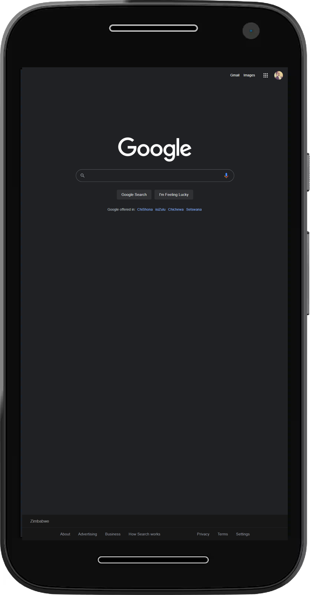
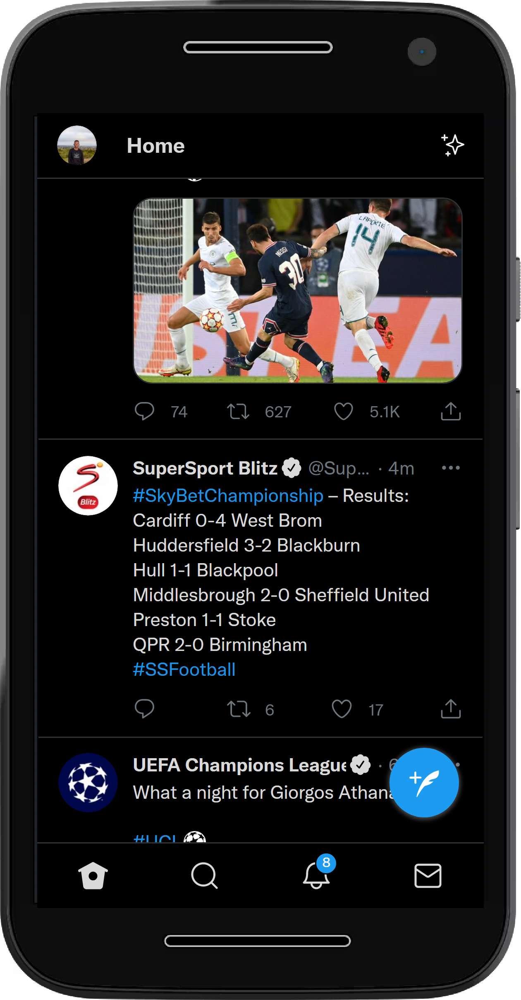

The Site has background videos that catch the user's eyes and there is a nice call to action button at the bottom. The Text is clear and big enough that it is readable and few words to keep things interesting.
Visual Hierarchy
White Space and Clean Design

This is one one of the cleanest websites online. There is so much white space that it's easy to the eyes and the search bar is just inviting.
PARC: Proximity

Though packed with a plethora of content, Twitter manages to keep everything in order (keeping its proximity smooth and nice).